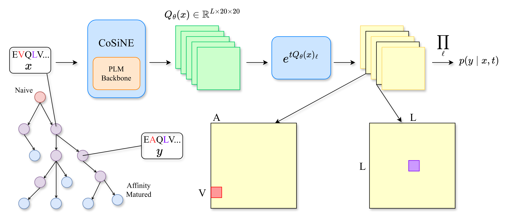
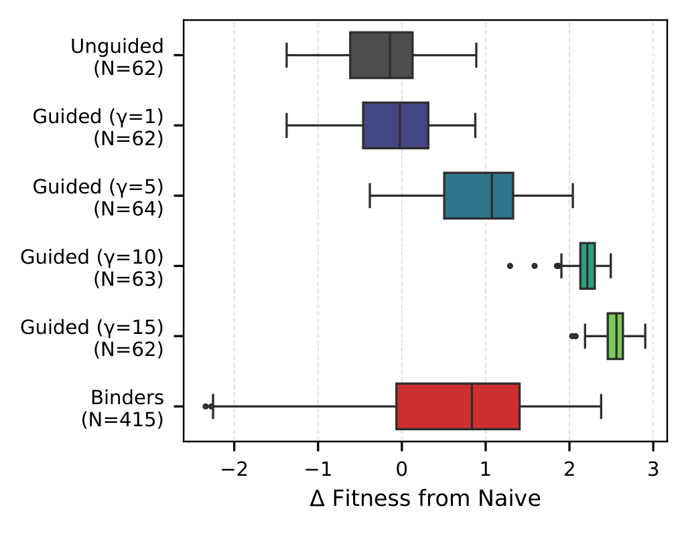
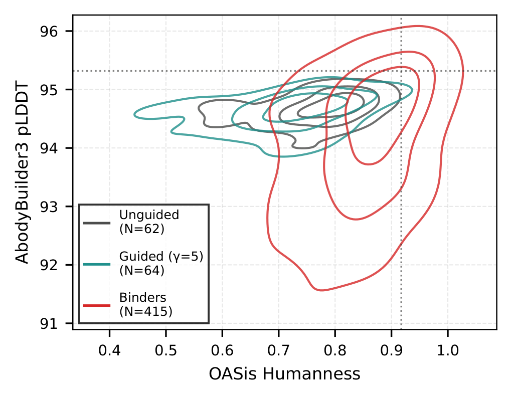

Conditionally Site-Independent Neural Evolution of Antibody Sequences
* Equal contribution
UC Berkeley · Mila · Université de Montréal · Fred Hutch · U Washington · HHMI · Columbia | ICML 2026
CoSiNE explicitly models the dynamics of affinity maturation, the evolutionary process that most antibody sequence models leave implicit.
Why CoSiNE?
- Dynamics, not just distribution. Most antibody language models treat mature sequences as i.i.d. samples from a stationary distribution. CoSiNE models the time-dependent process of affinity maturation with a continuous-time Markov chain whose rate matrices are parameterized by a deep neural network.
- Decoupling mutation from selection. A raw likelihood mixes up two things: how likely a mutation is to happen under somatic hypermutation, and how beneficial it is. We separate the two by taking a log-ratio against a frozen SHM model, leaving only the selection signal.
- Steerable generation. Guided Gillespie sampling steers CoSiNE toward user-specified antigens at inference time, running roughly 500× faster than exact oracle guidance and requiring no retraining of the base model.
Abstract
Common deep learning approaches for antibody engineering focus on modeling the marginal distribution of sequences. By treating sequences as independent samples, however, these methods overlook affinity maturation as a rich and largely untapped source of information about the evolutionary process by which antibodies explore the underlying fitness landscape. In contrast, classical phylogenetic models explicitly represent evolutionary dynamics but lack the expressivity to capture complex epistatic interactions. We bridge this gap with CoSiNE, a continuous-time Markov chain parameterized by a deep neural network. Mathematically, we prove that CoSiNE provides a first-order approximation to the intractable sequential point mutation process, capturing epistatic effects with an error bound that is quadratic in branch length. Empirically, CoSiNE outperforms state-of-the-art language models in zero-shot variant effect prediction by explicitly disentangling selection from context-dependent somatic hypermutation. Finally, we introduce Guided Gillespie, a classifier-guided sampling scheme that steers CoSiNE at inference time, enabling efficient optimization of antibody binding affinity toward specific antigens.
Method

Protein evolution is naturally described by a continuous-time Markov chain (CTMC) over the $|\mathcal{A}|^L$ space of length-$L$ sequences. The full sequence-level rate matrix is intractable: a single matrix exponential costs $O(|\mathcal{A}|^{3L})$. Classical phylogenetic models work around this by assuming sites evolve independently, which gives a tractable likelihood but throws away epistasis.
CoSiNE keeps the factorized likelihood but conditions each site's rate matrix on the entire sequence through a neural network $Q_\theta$:
$$ p_\theta(y \mid x, t) \;=\; \prod_{\ell=1}^{L} \exp\!\bigl(t\, Q_\theta(x)_\ell\bigr)_{x_\ell,\, y_\ell}. $$
Each site's rate matrix sees the whole sequence (so the model captures epistasis), while transitions still factorize across sites (so the likelihood is cheap). In the paper we show that this construction is a first-order approximation of the true sequential point-mutation process, with an $\ell_1$ error bound of $(\lambda t)^2$ that vanishes for short branches. For long branches we use a Gillespie procedure that, under the rate-matching assumption, provably samples from the exact process.
The selection score
A raw likelihood conflates two things: how likely a mutation is to occur under neutral somatic hypermutation (SHM), and how strongly that mutation is favored by selection. To isolate the selection signal, we take a log-ratio between CoSiNE and a frozen pre-trained SHM model $q$ (Thrifty, Sung et al. 2025):
$$ \mathrm{Score}(x \to y) \;=\; \log p_\theta(y \mid x, t) \;-\; \log q(y \mid x, t) \;\approx\; \log P_{\text{fix}}(x \to y) \,+\, C. $$
Under the Halpern–Bruno decomposition $Q_{xy} = k \mu_{xy} P_{\text{fix}}(x \to y)$, the mutational term $\mu_{xy}$ cancels and what remains is a calibration-free proxy for fitness that we can compute zero-shot.
The correction lifts every assay
Spearman $\rho$ improves on all seven assays when we replace the raw log-likelihood with the SHM-corrected selection score.
The correction helps on every assay, with the largest gains where mutational bias is strongest. Values from Figure 4 of the paper.
Zero-shot variant effect prediction
Across nine assays, CoSiNE matches or beats the best baseline on eight. Spearman $\rho$ between model score and measured fitness, computed without ever seeing experimental labels during training.
CoSiNE evaluated at $t = 0.2$. Best per assay in bold, second-best underlined.
Guided Gillespie
To design antibodies that bind a chosen antigen $z$, we want to draw from the conditional density $p(y \mid x, t, z)$. Nisonoff et al. (2025) showed that in the $t \to 0$ limit this corresponds to tilting the rate matrix by the likelihood ratio:
$$ \bigl(Q^{(\gamma)}_z\bigr)_{x,y} \;=\; \left(\frac{p(z \mid y)}{p(z \mid x)}\right)^{\!\gamma}\! Q_{x,y}, $$
where $\gamma > 0$ controls guidance strength. We approximate $p(z \mid y)$ with an external sequence-to-affinity predictor and replace the per-neighbor predictor calls with a single gradient step (a first-order Taylor expansion), which gives a roughly 500× speedup over exact oracle guidance with no measurable loss in fitness improvement. Because the predictor only sees clean sequences, any off-the-shelf sequence-to-property model can be plugged in without retraining.
Steering evolution toward a target
Guided sampling shifts the affinity distribution toward known binders while keeping humanness (OASis) and structure (AbodyBuilder3 pLDDT) inside the natural antibody distribution.


Constrained CDR optimization
Best mean and max affinity gain under a strict budget. Each method refines a SARS-CoV-1 binder with at most five mutations in CDR positions and at most five oracle calls per generated variant. Greedy* is exempt from the oracle budget (2,756 calls per variant) and is shown only as a reference upper bound.
Among budget-constrained methods, CoSiNE attains the highest mean and maximum $\Delta$Bind while preserving humanness comparable to the antibody-specialized AbLang-PoE. Best per column in bold, second-best underlined. Greedy* is excluded from the ranking.
Limitations
First-order approximation. CoSiNE's factorized likelihood is a first-order approximation of the true sequential point-mutation process, with error that grows quadratically in branch length. This is acceptable for affinity maturation, where branches are short, and Gillespie sampling reduces the error further, but it does not eliminate it.
No indels. The current framework models substitutions only, which restricts CoSiNE to fixed-length sequences or multiple sequence alignments. This is a natural fit for antibodies, where indels are rare and typically purified out, but it limits direct transfer to other protein families.
Reference
@inproceedings{lu2026cosine,
title = {Conditionally Site-Independent Neural Evolution of Antibody Sequences},
author = {Lu, Stephen Zhewen and Vermani, Aakarsh and Sanno, Kohei and
Lu, Jiarui and Matsen IV, Frederick A. and
Jagota, Milind and Song, Yun S.},
booktitle = {Proceedings of the 43rd International Conference on Machine Learning},
year = {2026},
note = {ICML 2026}
}